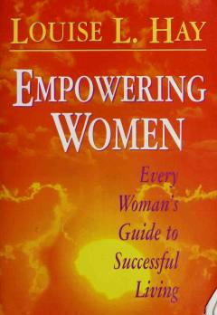

EWAyollar uchun o'zini sevish va hayotda muvaffaqiyatga erishish bo'yicha amaliy qo'llanma.
Ushbu kitob ayollarga o'zini sevish, jamiyat qoliplaridan chiqish va hayotda muvaffaqiyatga erishish yo'llarini o'rgatadi. Louise Hay o'zining ijobiy fikrlash va tasdiqlar (affirmations) uslubi orqali o'quvchilarga ichki kuchini kashf etishda yordam beradi.